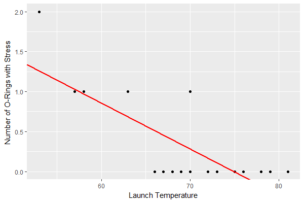

Regressiomallit mallintavat kohde- ja atribuuttimuuttujien välistä syy–seuraussuhdetta.
Yksinkertaisin regressiomalli on lineaarinen malli, jossa tarkasteltavaa ilmiötä pyritään kuvaamaan yhden selittävän muuttujan avulla.
Kirjan esimerkissä aineistona käytetään UCI Machine Learning Repository:sta löytyvää Challenger USA Space Shuttle O-Ring aineistoa, jonka avulla pyritään arviomaan tiivisteiden rasitustason ja laukaisuhetken lämpötilan välistä suhdetta.
Tämän ohjeen mallina on käytetty r-statistics.co -sivustolta löytyvää opasta.
Asennetaan tehtävän yhteydessä käytettävät paketit.
library(ggplot2) library(e1071)
Luetaan aineiston sisältävä csv-tiedosto.
fileName = "data/SpaceShuttle.txt" spaceShuttle = read.csv(fileName, header = T, sep=";")
Tavoitteena on siis rakentaa lineaarine malli muuttujien:
välille.
Ennen kuin mallia on järkevää rakentaa, on syytä pohtia voiko muuttujien välillä vallita syy-seurausyhteys.
Esimerkin tapauksessa tuntuisi hyvinkin luontevalta, että laukaisulämpötila osaltaan vaikuttaisi siihen kuinka kovalle koetukselle tiivisteet joutuvat.
Jos aineisto läpäisee järkevyystarkastelun, seuraavassa vaiheessa muuttujien arvoja tutkitaan graafisesti. Tyypillisesti aineistosta tulostetaan seuraavat graafit:
Hajontakuvion avulla tarkastellaan onko mielekästä yrittää mallintaa viivalla selittävän ja selitettävän muuttujan välistä suhdetta. Mikäli selittäviä muuttujia on useampia, piirretään niistä jokaisesta oma hajontakuvionsa.
scatter.smooth(x=spaceShuttle$Launch.Temperature, y=spaceShuttle$Number.of.O.Rings.with.Stress, xlab = "Launch Temperature", ylab = "Number of O-Rings with Stress")
Laatikkokuvion avulla tutkitaan sisältääkö aineisto poikkeavia havaintoja. Tyypillisesti 1.5 * kvartaalivälin ulkopuolelle sijoittuvia arvoja pidetään poikkeavina havaintoina. Kvarttaaliväli saadaan laskettua muuttujan 25 %:n ja 75 %:n prosenttipisteiden erotuksena.
par(mfrow=c(1, 2)) # Jaetaan tulostualue kahteen sarakkeeseen
boxplot(spaceShuttle$Launch.Temperature,
main="Launch Temperature",
sub=paste("Poikkeavat arvot: ", boxplot.stats(spaceShuttle$Launch.Temperature)$out)
)
boxplot(spaceShuttle$Number.of.O.Rings.with.Stress,
main="Stressitaso",
sub=paste("Poikkeavat arvot: ", boxplot.stats(spaceShuttle$Number.of.O.Rings.with.Stress)$out)
)
Tiheysjakauman avulla tutkitaan selittävän muuttujan jakaumaa. Ideaalitapauksesa se noudattaa normaalijakaumaa.
par(mfrow=c(1, 2)) # divide graph area in 2 columns
plot(density(spaceShuttle$Launch.Temperature),
main="Launch Temperature",
ylab="Frequency",
sub=paste("Skewness:", round(e1071::skewness(spaceShuttle$Launch.Temperature), 2)))
polygon(density(spaceShuttle$Launch.Temperature), col="red")
plot(density(spaceShuttle$Number.of.O.Rings.with.Stress),
main="Number of O-Rings with Stress",
ylab="Frequency",
sub=paste("Skewness:", round(e1071::skewness(spaceShuttle$Number.of.O.Rings.with.Stress), 2)))
polygon(density(spaceShuttle$Number.of.O.Rings.with.Stress), col="red")
Korrelaatiokerroin mittaa muuttujien välistä lineaarista yhteyttä. Tyypillisesti lasketaan Pearsonin korrelaatiokerroin, jonka arvot voivat vaihdella välillä [-1,1].
Korrelaatiokertoimen avulla voidaan laskea selityskerroin R2, joka tarjoaa yhden tavan arvoidan saadun mallin luotettavuutta.
Huom. Korrelaatiokerroin kertoo tilastollisesta yhteydestä, suurikaan kertoimen itseisarvo ei vielä tarkoita muuttujien välillä vallitsevan syy-seurausyhteyttä.
korrelaatiokerroin = cor(spaceShuttle$Launch.Temperature, spaceShuttle$Number.of.O.Rings.with.Stress) korrelaatiokerroin # -0.725671
Kun alkutarkastelujen perusteella ollaan vakuuttuneita siitä, että muuttujien välille voidaan rakentaa lineaarinen malli, niin syötetään tarvittavat arvot R:n lm -funktiolle.
Funktiolle annetaan minimissään kaksi parametriä:
linearMod <- lm(Number.of.O.Rings.with.Stress ~ Launch.Temperature, data=spaceShuttle) print(linearMod) # Call: # lm(formula = Number.of.O.Rings.with.Stress ~ Launch.Temperature, # data = spaceShuttle) # # Coefficients: # (Intercept) Launch.Temperature # 4.30159 -0.05746
Lineaarisen mallin määrittäviksi regressiokertoimiksi saadaan:
Näin ollen lineaarisen mallin yhtälö on: yi = 4.30159 -0.05746xi + ei. Termillä ei tarkoitetaan jäännösvirhettä.
Tässä vaiheessa voidaan tulostaa suoran kuvaaja pistejoukon yhteyteen ja tarkastella mallin toimivuutta.
gg <- ggplot(spaceShuttle, aes(x=Launch.Temperature, y=Number.of.O.Rings.with.Stress)) +
labs(x="Launch Temperature",
y="Number of O-Rings with Stress ") +
geom_point()
# - lisätään suora
p1 <- gg + geom_abline(intercept = linearMod$coefficients[1],
slope = linearMod$coefficients[2],
size=1, linetype="solid", color="red")

Ennen mallin käyttämistä, täytyy arvioida sen käyttökelpoisuutta. Tätä varten on olemassa tilastollisia mittareita.
Aloitetaan tulostamalla mallista yhteenveto.
summary(linearMod) # Call: # lm(formula = Number.of.O.Rings.with.Stress ~ Launch.Temperature, # data = spaceShuttle) # # Residuals: # Min 1Q Median 3Q Max # -0.50921 -0.30810 0.00794 0.20905 0.74381 # # Coefficients: # Estimate Std. Error t value Pr(>|t|) # (Intercept) 4.30159 0.83110 5.176 3.96e-05 *** # Launch.Temperature -0.05746 0.01189 -4.833 8.90e-05 *** # --- # Signif. codes: 0 ‘***’ 0.001 ‘**’ 0.01 ‘*’ 0.05 ‘.’ 0.1 ‘ ’ 1 # # Residual standard error: 0.3935 on 21 degrees of freedom # Multiple R-squared: 0.5266, Adjusted R-squared: 0.5041 # F-statistic: 23.36 on 1 and 21 DF, p-value: 8.895e-05
Yhteenveto kertoo meille joukon asioita. Yksi niistä on viimeisellä rivillä oleva mallin p-arvo ja Coefficients otsikon alta löytyvät regressiokertoimien p-arvot.
p-arvoa pidetään tärkeänä, koska saadun mallin ajatellaan olevan tilastollisesti merkitsevä vain mikäli p-arvot alittava etukäteen asetetun merkitsevyystason, jona usein käytetään arvoa 0.05.
Lineaarisessa mallissa nollahypoteesina on, että selittävät muuttujat eivät vaikuta selittävään muuttujaa, jolloin selittävien muuttujien regressiokertoimet ovat nollia. Vastahypoteesina on, että selittävät muuttuja vaikuttavat selittävään muuttujaan, jolloin myös kertoimien arvot poikkeavat nollasta.
Saatujen kertoimien merkitsevyyttä arvioidaan t- ja p-arvoilla:
Näin ollen, jos p-arvo on pienempi kuin asetettu merkitsevyystaso, esim. < 0.05, uskallamme hylätä nollahypoteesin, että regressiokertoimen merkitys on nolla.